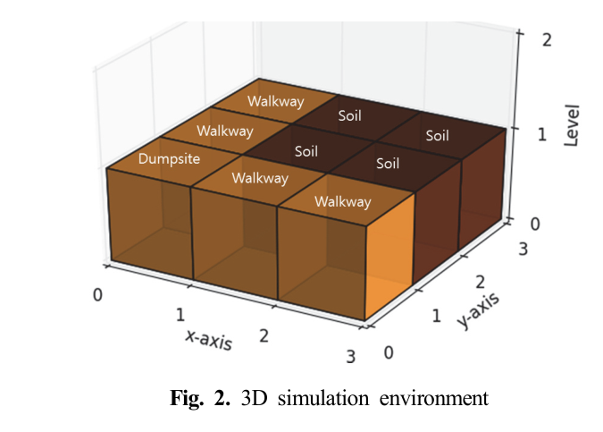
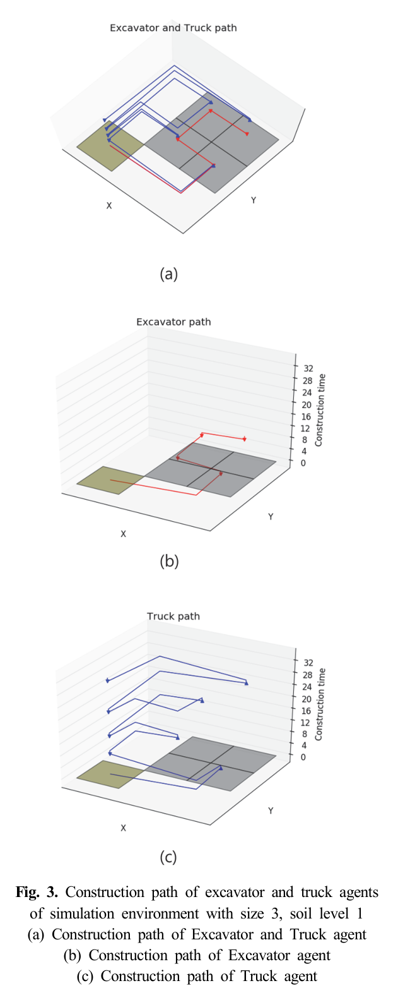
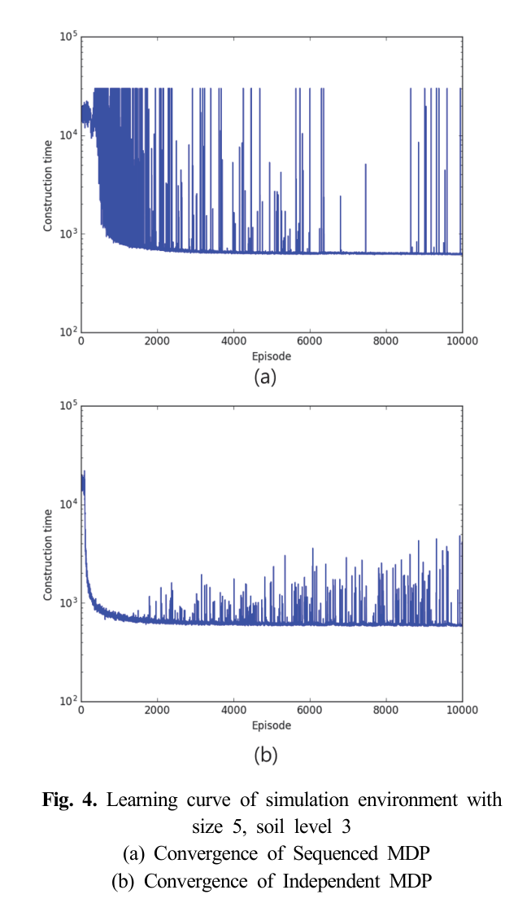
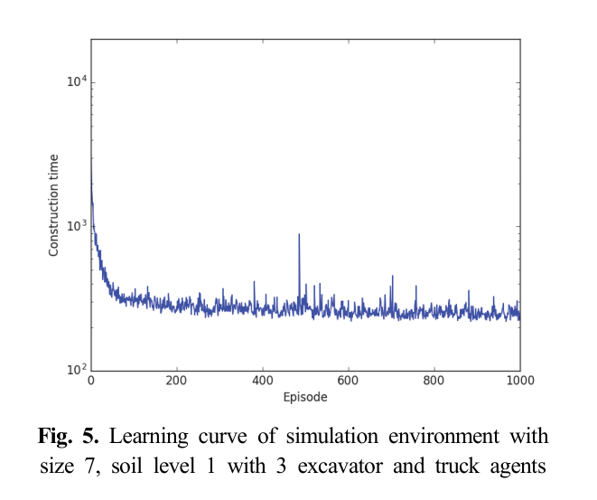
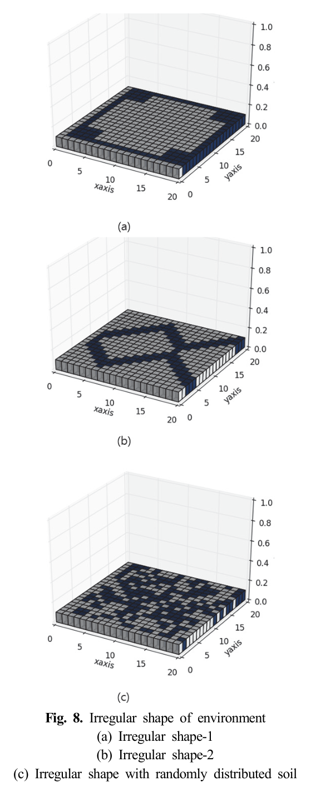
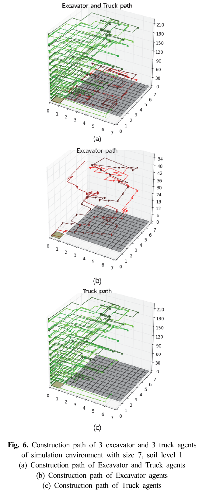
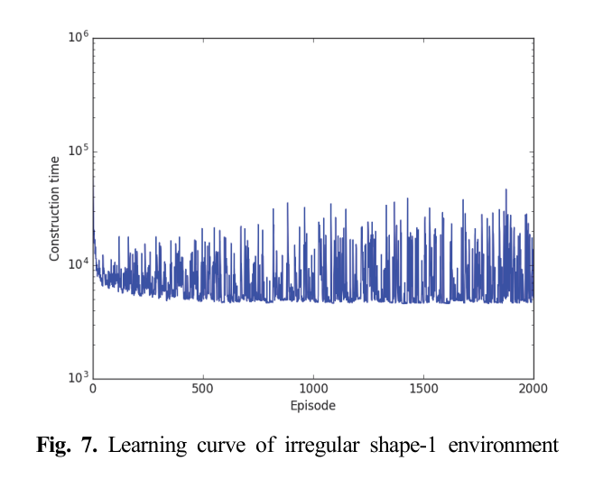
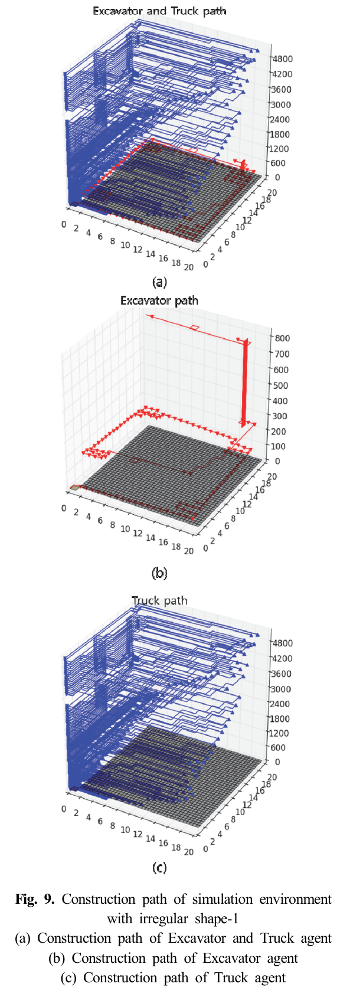

Korea Advanced Institute of Science and Technology2018#065학습·RL·IL·VLA학술논문
강화학습을 이용한 이종 장비 토목 공정 계획
Earthwork Planning via Reinforcement Learning with Heterogeneous Construction Equipment
Min-Gi Ji, Jun-Keon Park, Do-Hyeong Kim, Yo-Han Jung, Jin-Kyoo Park, Il-Chul Moon · Journal of the Korea Society for Simulation 27(1) (2018) 1-13
한줄 요약 — 굴삭기를 먼저 학습하고 고정한 뒤 트럭을 학습하는 순차 MDP와, 각 장비가 가까운 토양·매립지 방향만 보는 독립 MDP를 비교했다. 5×5·토심 3에서 독립 방식은 최적 576틱에 가까운 578.0틱을 학습했고, 트럭 1→3대 증원은 7×7 공정시간을 583→213틱으로 줄였으나 실제 장비 동역학은 포함하지 않았다.
1.연구 배경 및 동기
이종 토공장비의 순서와 배치를 경험으로 학습하는 공정계획
토공계획은 절토량과 운반량만 계산하는 문제가 아니라 굴삭기와 트럭이 어느 위치에서 어떤 순서로 움직일지 정하는 문제다. 현장관리자의 경험에 의존하면 지형과 장비 수가 바뀔 때 계획 품질이 달라지고, 모든 조합을 미리 규칙으로 작성하기도 어렵다. 논문은 장비의 이동과 작업을 2차원 격자 시뮬레이션에서 반복 실행하며 최소 공정시간 정책을 학습한다.
격자 셀은 원지반 토양, 절토된 토양, 이동로, 사토장으로 구분된다. 굴삭기는 네 방향 이동과 절토를, 트럭은 네 방향 이동과 적재·하역을 수행한다. 절토와 적재는 한 번에 토양 한 단위를 처리하고 모든 토양을 절토해 사토장으로 옮기면 에피소드가 끝난다. 공정시간은 이때까지 소비한 simulation tick 수다.
모든 장비 위치와 토양 분포를 하나의 MDP 상태로 사용하면 격자 크기, 토심, 장비 수에 따라 상태공간이 급격히 증가한다. 저자들은 굴삭기와 트럭의 학습 순서를 분리하는 sequenced MDP와, 각 장비가 주변 목표의 상대 방향만 관측하는 independent MDP를 제안하고 수렴 속도와 최종 공정시간을 비교한다.

원문 Figure 2 · PDF p.4 — Fig. 2. 3D simulation environment
선행 연구의 한계
관리자 경험 중심 계획은 새로운 지형이나 이종 장비 조합에 대한 적응성과 반복가능성이 낮다.
전체 장비 위치와 전역 토양분포를 동시에 상태로 쓰면 격자가 커질수록 Q-table이 폭발한다.
굴삭기와 트럭을 하나의 거대한 공동행동으로 묶으면 가능한 행동조합이 장비 수에 따라 증가한다.
고정 규칙 시뮬레이션은 학습 중 발견할 수 있는 우회경로나 장비수별 병목 변화를 충분히 탐색하지 못한다.
이 연구의 기여
굴삭기 정책을 먼저 학습·고정한 뒤 그 결과 환경에서 트럭 정책을 학습하는 순차 Q-learning 절차를 제시했다.
각 장비의 위치와 가장 가까운 작업대상의 방향만으로 상태를 축약한 independent MDP I·II를 설계했다.
장비 수 조합별 최소 공정시간을 분석해 시험 환경에서는 굴삭기보다 트럭 수가 전체 처리시간의 주요 병목임을 보였다.
2.방법론 및 시스템 구성
순차 방식에서는 먼저 굴삭기가 전 장비 위치와 토양분포를 상태로 보고 이동 또는 절토를 학습한다. 굴삭기 정책이 정해지면 이를 고정한 채 트럭이 자신의 위치, 절토된 토양분포, 사토장 적재량을 보고 이동·적재·하역 정책을 학습한다. 이 구조는 두 장비의 역할을 분리하지만 전역 상태를 유지한다.
독립 방식은 각 장비에 별도 Q함수를 주고 동시에 학습한다. Independent MDP I은 장비 위치와 가장 가까운 토양 또는 절토토양의 방향을 사용한다. 더 큰 격자와 다장비를 위한 MDP II에서는 빈 트럭은 절토토양 방향, 적재 트럭은 사토장 방향을 관측하게 해 적재상태를 목표 방향에 흡수하며, 상태 방문횟수에 따라 탐험률을 줄인다.
처리 파이프라인
1
격자 환경 초기화
토양·이동로·사토장 셀과 굴삭기·트럭의 시작 위치를 배치하고 토심만큼 각 절토 셀의 처리 단위를 설정한다.
2
장비별 상태 관측
순차 방식은 전역 분포를 사용하고 독립 방식은 자신의 위치와 가장 가까운 작업대상의 방향코드만 사용한다. 적재 여부에 따라 트럭의 목표는 절토토양 또는 사토장으로 바뀐다.
3
ε-greedy 행동
굴삭기는 이동 네 가지와 절토 중에서, 트럭은 이동 네 가지와 적재·하역 중에서 선택한다. 경계를 벗어난 행동에는 음의 보상, 유효한 작업에는 양의 보상을 준다.
4
Q값 갱신
현재 보상과 할인된 다음 상태 최대 Q값으로 해당 장비의 Q-table을 갱신한다. 순차 MDP는 굴삭기와 트럭을 차례로, 독립 MDP는 두 종류 장비를 함께 학습한다.
5
공정 종료와 정책 평가
모든 원토양이 절토되고 모든 절토토양이 사토장으로 운반되면 에피소드를 종료한다. 학습곡선, 최초 최소시간 도달 에피소드, 최종 최소시간, 실제 계산시간과 장비 경로를 비교한다.
원문 수식과 의미
에피소드별 탐험률
\epsilon_t=\frac{\epsilon_0}{1+t}
정형 환경 비교에서는 초기 탐험계수 ε0를 격자 크기의 20배로 두고 에피소드가 진행될수록 탐험행동 확률을 낮춘다.
상태 방문 기반 탐험률
\epsilon(s)=\frac{\epsilon_0}{c(s)}
큰 지형과 다장비 환경에서는 특정 상태의 방문횟수 c(s)가 늘수록 그 상태에서의 탐험을 줄여 드문 상태의 탐색기회를 보존한다.
굴삭기를 master, 트럭을 slave처럼 순서화한다. 먼저 굴삭기의 절토·이동 정책을 수렴시킨 뒤 그 정책이 만드는 절토토양 분포를 조건으로 트럭의 운반정책을 학습한다. 두 역할의 동시 비정상성을 피할 수 있지만 각 단계가 여전히 전역 상태를 사용한다.
굴삭기 상태에는 모든 장비 위치와 원토양 분포가 포함된다.
트럭 학습 중 굴삭기 정책은 고정된다.
작은 3×3·토심 1 환경에서는 풍부한 상태정보 덕분에 독립 방식보다 처음 최소시간에 빨리 도달했다.
Independent MDP I·II
각 장비가 별도 Q함수로 자기 행동만 학습하도록 공동 문제를 분해한다. MDP I은 위치와 최근접 작업대상의 방향을 상태로 사용하고, MDP II는 트럭 적재상태에 따라 목표방향 자체를 바꿔 상태 수를 더 줄인다. 이에 따라 7×7 다장비와 20×20 불규칙 지형도 표 기반 Q-learning으로 실험할 수 있다.
전역 토양 배열 대신 최근접 목표의 상대방향을 사용해 상태공간을 축약한다.
굴삭기와 트럭을 동시에 학습하되 각 장비는 독립적인 행동가치표를 가진다.
큰 환경에서는 상태 방문빈도에 따른 ε를 사용해 불균일한 탐색을 조절한다.
장비수-공정시간 민감도
독립 MDP II는 동일 7×7 지형에서 굴삭기와 트럭을 각각 1~3대로 바꾸며 학습할 수 있다. 결과적으로 굴삭기 수만 늘릴 때보다 트럭을 늘릴 때 최소 공정시간이 크게 감소했다. 절토 외에 적재·운반·하역을 모두 수행하는 트럭 작업이 시험 환경의 병목이었기 때문이다.
1대 굴삭기 조건에서 트럭 1·2·3대의 최소시간은 각각 583·299·213틱이었다.
트럭 1대 조건에서 굴삭기 1·2·3대의 최소시간은 583·580·580틱으로 거의 변하지 않았다.
장비가 늘면 Q함수와 계산량도 증가해 학습 실제시간은 길어질 수 있다.

원문 Figure 3 · PDF p.7 — Fig. 3. Construction path of excavator and truck agents of simulation environment with size 3, soil level 1 (a) Construction path of Excavator and Truck agent (b) Construction path of Excavator agent (c) Construction path of Truck agent
4.실험 결과
실험 환경·장비·데이터
정형 비교는 크기 3·4·5의 격자와 토심 1·2·3을 조합한 9개 환경에서 수행했다.
다장비 실험은 7×7, 토심 1 환경에서 굴삭기와 트럭을 각각 1·2·3대로 조합했다.
대형 실험은 20×20, 토심 1의 두 불규칙 형상과 무작위 토양배치 한 가지를 사용했다.
정형 소규모 환경에서는 계산 가능한 이론적 최적 공정시간을 최종 정책의 기준으로 사용했다.
평가 지표
최소 공정시간을 처음 발견한 episode 번호
학습 중 발견된 최소 simulation time
정형 환경에서 계산한 optimal simulation time과의 차이
각 학습 실행의 실제 wall-clock time 및 학습 후 장비 이동경로

원문 Figure 4 · PDF p.8 — Fig. 4. Learning curve of simulation environment with size 5, soil level 3 (a) Convergence of Sequenced MDP (b) Convergence of Independent MDP

원문 Figure 5 · PDF p.9 — Fig. 5. Learning curve of simulation environment with size 7, soil level 1 with 3 excavator and truck agents

원문 Figure 8 · PDF p.10 — Fig. 8. Irregular shape of environment (a) Irregular shape-1 (b) Irregular shape-2 (c) Irregular shape with randomly distributed soil
핵심 결과 해석
3×3~5×5 비교에서 두 방식 모두 이론적 최적시간에 가깝게 수렴했다. 5×5·토심 3의 이론적 최적값은 576틱이며, 순차 방식의 10회 평균 최소시간은 606.7틱, 독립 방식은 578.0틱이었다. 같은 조건의 실제 계산시간도 순차 방식 3101.8초, 독립 방식 1387.6초로 축약 상태의 이점이 컸다. 다만 가장 작은 3×3·토심 1에서는 순차 방식이 평균 976.5에피소드에 최소시간을 처음 찾아 독립 방식의 2610.1에피소드보다 빨랐다.
7×7 환경에서는 트럭 수가 공정시간을 좌우했다. 굴삭기 1대에서 트럭을 1대에서 3대로 늘리자 최소시간이 583틱에서 213틱으로 줄었다. 반대로 트럭 1대에서 굴삭기를 1대에서 3대로 늘려도 583틱에서 580틱으로 거의 변하지 않았다. 굴삭기 3대·트럭 3대 조건은 220틱에 수렴했으며 실제 학습시간은 200.4초였다.
Independent MDP II는 20×20의 불규칙 지형에서도 2,000에피소드 안에 수렴 경향을 보였다. 최소 공정시간은 두 불규칙 형상에서 5,165틱과 16,818틱, 무작위 배치에서 18,734틱이었다. 경로 그림에서는 장비가 작업 후반에 남겨 둔 셀로 되돌아가는 현상이 나타났으며, 지형이 복잡할수록 처리시간과 실제 계산시간이 함께 증가했다.
정량 결과
평가 항목
정량 결과
조건·맥락
원문 근거
5×5·토심 3 독립 MDP 최소시간
578.0 ticks
10회 평균; 이론적 최적시간 576틱
PDF p.8
5×5·토심 3 학습 실제시간
Independent 1387.6 s; Sequenced 3101.8 s
각 방법 10,000에피소드 실행
PDF p.8
7×7, 굴삭기 1대의 트럭 증원 효과
583 → 299 → 213 ticks
트럭을 1대, 2대, 3대로 증가시킨 최소 공정시간
PDF p.9
7×7, 트럭 1대의 굴삭기 증원 효과
583 → 580 → 580 ticks
굴삭기를 1대, 2대, 3대로 증가시킨 최소 공정시간
PDF p.9
굴삭기 3대·트럭 3대
220 ticks; 200.4 s
7×7·토심 1 환경의 최소시간과 실제 학습시간
PDF p.9
20×20 대형환경 최소시간
5165; 16818; 18734 ticks
불규칙 형상 1·2 및 무작위 토양배치
PDF p.10
실패 사례와 경계조건
대형 불규칙 지형에서는 일부 토양 셀을 초기에 지나친 뒤 공정 후반에 되돌아가 처리하는 비효율 경로가 나타났다.
전역 상태를 쓰는 순차 MDP는 5×5·토심 3에서 독립 방식보다 최적값과의 차이와 계산시간이 크게 증가했다.
장비 수를 늘리면 각 장비의 Q함수와 상호작용이 늘어 실제 학습시간이 증가하며, 굴삭기만 증원하면 트럭 병목 때문에 공정시간 개선이 거의 없었다.

원문 Figure 6 · PDF p.9 — Fig. 6. Construction path of 3 excavator and 3 truck agents of simulation environment with size 7, soil level 1 (a) Construction path of Excavator and Truck agents (b) Construction path of Excavator agents (c) Construction path of Truck agents

원문 Figure 7 · PDF p.10 — Fig. 7. Learning curve of irregular shape-1 environment

원문 Figure 9 · PDF p.11 — Fig. 9. Construction path of simulation environment with irregular shape-1 (a) Construction path of Excavator and Truck agent (b) Construction path of Excavator agent (c) Construction path of Truck agent
5.한계 및 향후 연구
현재 한계
모든 결과가 2차원 이산 격자 시뮬레이션에 기반하며 실제 굴삭기와 트럭으로 정책을 검증하지 않았다.
장비의 이동·절토·적재·하역은 단위 tick의 이산행동으로 단순화되어 가감속, 선회반경, 버킷 용량과 유압 동역학을 반영하지 않는다.
각 절토·적재 행동이 토양 한 단위를 확정적으로 처리하므로 토질, 장비 고장, 작업량 불확실성이 없다.
독립 MDP의 최근접 목표 방향은 상태를 줄이지만 전역 병목과 장비 간 충돌·대기를 명시적으로 표현하지 못한다.
향후 연구
실제 현장의 지형지도, 장비 제원, 주행시간과 작업시간을 이용해 simulation tick을 현실 시간·비용으로 보정해야 한다.
연료소비, 장비 임대비, 안전거리와 생산량을 함께 고려하는 다목적 보상으로 확장할 필요가 있다.
장비 간 충돌회피와 교차로 우선권을 상태·행동 제약에 포함하고 중앙계획과 분산정책을 비교해야 한다.
토질과 작업시간이 확률적으로 변하는 환경, 장비 고장과 작업중단 상황에서 정책의 재계획 성능을 검증해야 한다.
6.한마디로 정리
핵심 방법은?
굴삭기와 트럭을 전역 상태에서 순서대로 학습하는 MDP와, 최근접 작업대상의 방향만 보는 장비별 독립 MDP를 Q-learning으로 비교했다.
핵심 결과는?
독립 방식은 5×5·토심 3에서 최적 576틱에 가까운 578.0틱을 달성했고, 7×7 실험은 굴삭기보다 트럭 수가 공정시간에 더 큰 영향을 줌을 보였다.
한계는?
격자와 단위작업으로 단순화한 시뮬레이션이어서 실제 장비 동역학, 충돌, 토질 불확실성과 연료·비용 목적은 검증되지 않았다.